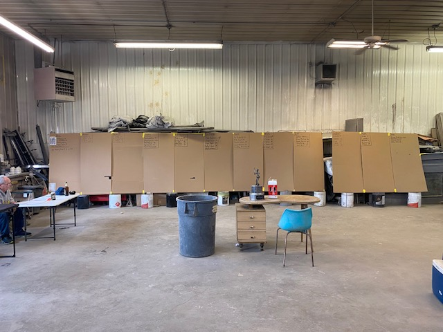

A 12 person roto league in Albert Lea, MN
A marriage of baseball, behavioral economics and AI. Twelve men picking 300 players, narrative versus numbers, rational versus irrational, over 8.5 hours on a Saturday every March.

I look more forward to our fantasy baseball draft than I do Christmas. Twelve guys, armed to the teeth with stats and analysis, chips on our shoulders from last season. We bring chili and 12-packs, all of which to be consumed over the next 8.5 hours, where we’ll auction 120 players, and draft the next 180. All at Blake’s Body Shop.
Nine years in, I’m the newest addition to a league that started when George Bush was President. How much do I love this draft? When I moved to Oregon, I flew back for it. When I moved to Wisconsin, I drove up for it.
It took six years before I got a spot on the medals podium. Before that, ESPN (the site we use) unceremoniously awarded me a roll of toilet paper for finishing last. I have a knack for picking players who end up on the IL.
I love this day for all the reasons that you’d think I’d love it. I love baseball. I love traditions. I loved how when in that room, all that mattered was baseball. But, it occurred to me that I love it for another geeky reason: behavioral economics. And more recently, it’s become an example of where AI works, where it fails, and a demonstration of how you can’t download 76 hours of metadata and years of relationships.
Nine drafts. Eight and a half hours each. Somewhere north of seventy-six cumulative hours of watching eleven men make decisions, drink beer and have the time of our lives. Or academically, nine years of field work in behavioral economics that isn’t assigned, nor graded. You can't place all those observations into AI to predict outcomes.
An auction room is a behavioral economics experiment running live. The first aggressive bid anchors an afternoon of prices. Loss aversion and sunk cost do their best work in the keeper rules: pay heavy for a player one March and his price follows him into the next, so that the carry-over decision quietly stops being "is he worth it" and becomes "I can't let that money have been for nothing." Rosters in this league hold monuments to auctions past.
Fun fact: In a room full of Twins fans, this Chicagoan always appreciates how much the room overpays for ballplayers with a TC on their cap.
Fun fact 2: Iron, another guy in the room, always talks about the “Steal of the Draft.” That sound you’re hearing is me patting myself on the back getting Shohei in 2024 for a cheap price. His stat line since then: .295 BA, 128 HR, 287 RBI, 341 R, 85 SB. That’s the steal of the decade.
Fun fact 3: I didn’t know Iron’s real name ’til this year.
Here is the point that matters for the framework: none of this was ever written down. How do you give an AI the notes that you don’t write over nine years? And what’s more, how do you describe the relationships that exist outside of the body shop?
There are no notes, no transcript, no spreadsheet column for "gets loose after the third hour." Seventy-six hours of behavioral data exists in my own "neural network." They cannot be pasted, parsed, or uploaded. To borrow from AI parlance, Description, the second D, has a hard boundary, and this is it. What can be described can be delegated. What can't be described can't be — and that, not any philosophy about human dignity, is why the judgment calls stay in the room. Those 76 hours of observations in the body shop, and the relationships that have existed since 1989 are the frameworks through which judgment calls get made.
Baseball and behavioral economics have been teammates for twenty years. Moneyball was never really about baseball. It was about a market mispriced by human bias, and Michael Lewis spent his next book, The Undoing Project, tracing that idea back to Kahneman and Tversky. Every fantasy league is a miniature of the same experiment: a closed market where twelve people price the same assets, and the biases do the mispricing.
While I don’t use AI in our draft room, I’ve used Claude this year to see where I might be able to make a trade and catch up on a marginal lead. As I was taking a Claude class, built on the AI Fluency framework developed by Professors Rick Dakan and Joseph Feller with Anthropic, I thought it would be cool to show a fun AI use case, and where AI is going to fall short.
Deciding what the machine handles and what stays human.
Giving the machine real material — data, rules, constraints — not vibes.
Judging the output. Catching the errors. Both directions.
Verification, honesty about limits, and owning the outcome.
Delegation is deciding whether, when, and how to bring AI into a task — and, just as important, which parts to keep. My league allows one add/drop per move period and trades with eleven other actual humans. That split the season's work cleanly: computation went to the machine, judgment stayed in the room. The recurring job I handed over: scanning eleven rosters for possible trades — who was quietly selling, what was mispriced, which deals actually moved my categories instead of just shuffling names.
The clearest delegation story of the season is a trade the AI never touched. What follows below is from the chat logs, starting March 22:
With two closers locked in, the AI flagged Paul Sewald, a late pick up, as a tradeable third saves source, and profiled Team Minnow as the league's most saves-hungry contender in the same conversation.
Even that quote needed a little discernment: Merrill Kelly is a starter, not a closer. The hold-him advice was right; the reasoning about Arizona’s bullpen was muddled. Delegation never means taking the machine’s word for the why.
Arizona's bullpen resolved, the market matured, and the deal — Sewald to Minnow for Jesus Luzardo — got made without consulting the AI at all. No transcript of the decision exists because there wasn't one. Timing, negotiation, and the read on the other manager were never delegated. By July, my saves points had held without Sewald, exactly as projected, and Luzardo had deepened a strikeout rotation. Point of Pride: Luzardo is an All-Star, and Sewald is a closer with an ERA of 4.50. Poor Minnow!
The monthly moves tell the same story. In a league that only allows one add/drop a month, every pickup is critical. April’s went to a starter (Landen Roupp) instead of forcing a trade from weakness. May’s went to Brayan Rocchio when injury demanded finding a shortstop. June’s went to Sam Antonacci, who I grabbed to chase steals, but the math showed steals were unwinnable. I’ve kept the player, dropped the plan, but Antonacci remains my best trade chip.
That’s what the machine was really for: a second opinion. Left alone, the impulse was to find another trade and churn the roster. More than once the advice was do nothing, and do nothing was right.
Description is usually taught as prompting. I described my league in sentences and got back plausible, reputation-based analysis — the machine remembered who players were supposed to be, what the Internet was writing about past performance. Behavioral economists have a name for that: availability bias, judging by what comes easily to mind. It turns out a machine trained on the internet’s opinions has the internet’s biases. It "knew" Kyle Tucker was a star the way a casual fan does, regardless of what Kyle Tucker was hitting (Let’s not talk about how bad Kyle Tucker was hitting). The cure for its bias was the same as the cure for mine: force the actual numbers into the conversation.
Description also means constraints. The analysis only got sharp once the machine knew the rules that shape everything: weekly roster locks (bench players produce nothing, so bench pieces are free trade currency), one move per month (no streaming, every pickup is a commitment), and a three-year keeper clock (some stars are rentals, some are franchises — and the difference is invisible in the stats).
Well-described data buys computed strategy. This is the weekly report that good description produces:
| Cat | Value | Pts | Next point costs | Cushion below |
|---|---|---|---|---|
| R | 441 | 12 | — leading — | 13 over Jensen |
| HR | 121 | 7.5 | 1 HR (pass Minnow) | 1 over Hagen |
| RBI | 411 | 10 | 12 (pass Jensen) | 11 over Hanson |
| SB | 41 | 2 | 9 (pass Diemer) | 2 over Bux! |
| AVG | .2641 | 12 | — leading — | .0033 over Bux! |
| K | 573 | 8 | 10 K (pass blake) | 2 over Justin |
| W | 23 | 1 | 3 W (pass Jensen) | — floor — |
| SV | 34 | 11 | 4 SV (pass Hanson) | 1 over Bux! |
| ERA | 3.872 | 7 | 0.051 (pass Hanson) | 0.233 over Dan |
One home run passes Team Minnow. Nine stolen bases buys almost nothing. No amount of clever prompting produces that sentence — only real data, handled with real rigor.
Discernment is judging the machine’s output, and in practice it’s bias-spotting, in both directions. The machine arrives with the internet’s biases: reputation, recency, the tidy story. I arrive with a baseball fan’s obsession. I thought it would be fun to share my conversation with Claude as “we” search how to make the team better.
"I don't have a lead in SB. I am dead last. Check yourself, Claude."
Confused raw stat totals with rotisserie points and built a trade recommendation on a stolen-base "lead" that didn't exist. The correction flipped the entire analysis — and taught a season-long lesson about verifying which numbers are which.
"We get to keep players for three years. This is the first year Blake has Judge. He won't trade him."
Built an elegant buy-low case for Aaron Judge — injury discount, motivated seller, perfect category fit — on backwards keeper economics. The endowment effect was the real analysis: a year-one star is a rebuilder's most prized possession, not his surplus, and his owner values him beyond any projection. Rebuilders sell rentals and hold clocks. No dataset contained that; nine years in the room did.
"Look at my OF and 1B. These are strong positions for me."
Recommended power bats at positions that weren't broken — solving problems the roster didn't have. Redirected, the analysis collapsed to the real deficit (the left side of the infield) and a much better target.
"I don't see Tony giving him up for any of my SP."
Kept escalating a negotiation in a currency the other manager didn't want. The math liked the trade; the manager knew the man — 8.5 hours a year, for years. League politics ended the conversation the spreadsheet couldn't.
And the loop runs the other way, because the manager has biases too. Mid-race, deal-hungry, I floated trading Antonacci to my closest rival for Max Muncy — a classic case of wanting a trade more than wanting its consequences. The machine caught it: the deal would hand first place the stolen bases and batting average points sitting on my two thinnest cushions — up to a four-point net swing to the one team I'm racing, financed by me. The room checks the machine's biases; the math checks the room's.
The pattern across every exchange: treat the first answer as an opening bid. The tool got dramatically better the moment I stopped being polite to it.
Diligence is the simplest D: show that it’s working. The not so humble brag shows me in first place in the standings. The chart below is the season plotted at the three points I checked in with Claude: 8th in May, 3rd in early July, tied for 1st three days later. Three check-ins make a line to show the progress.
I think that the behavioral economists Kahneman and Tversky, Thaler and Sunstein would appreciate the checks that AI provides to my built-in biases. It took a "nudge" from AI Fluency: Framework & Foundations, from Anthropic and Professors Dakan and Feller, to see the way these things intertwine.